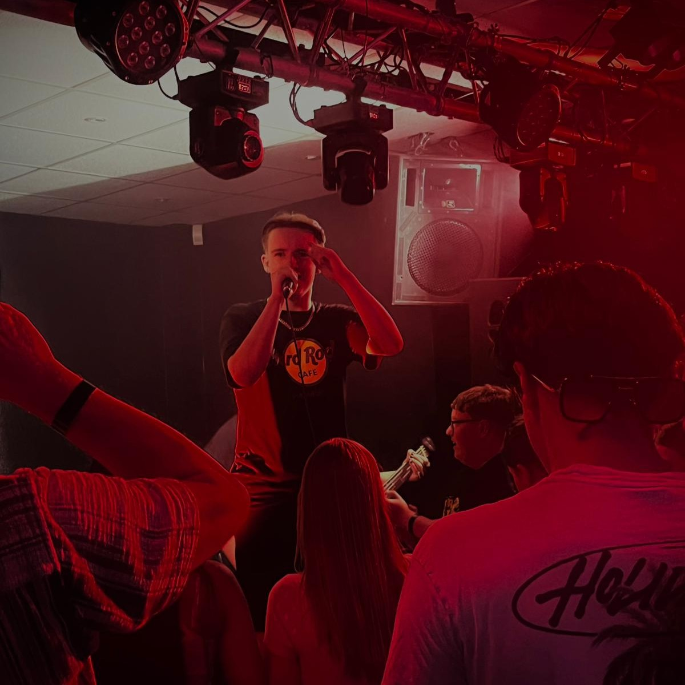
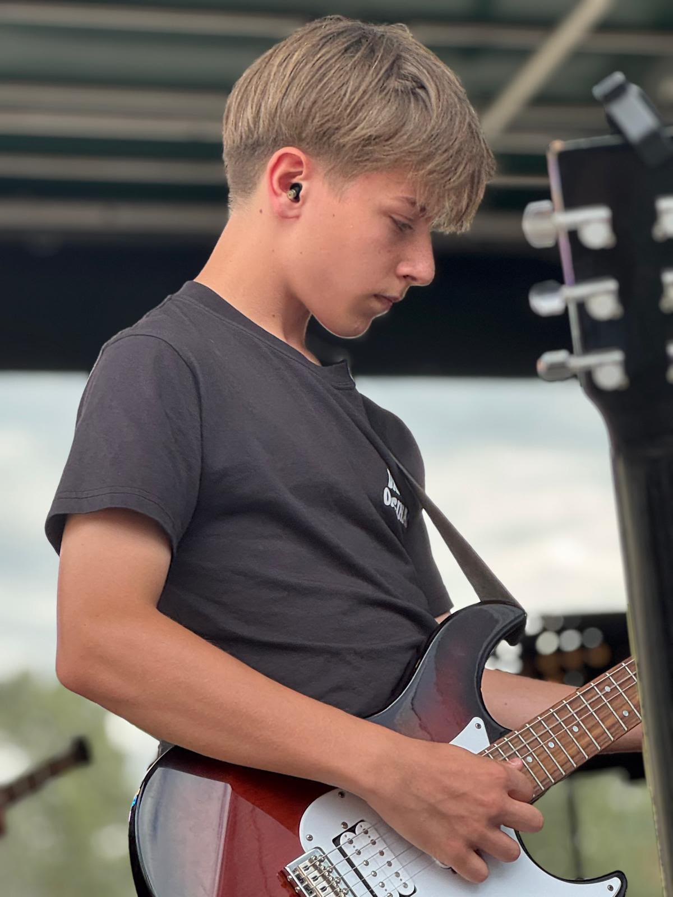
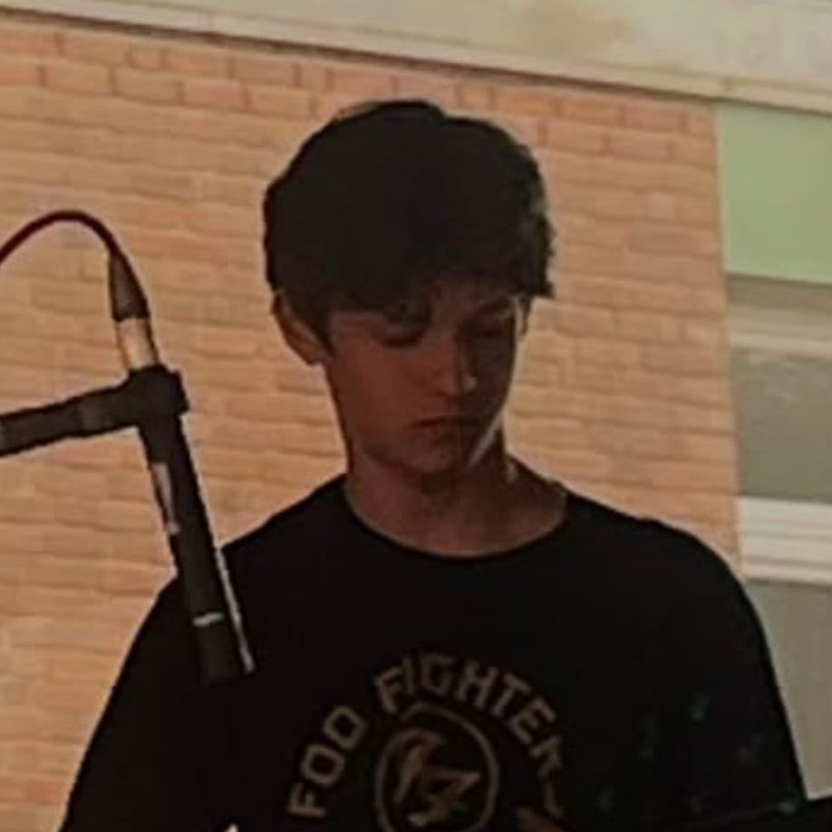
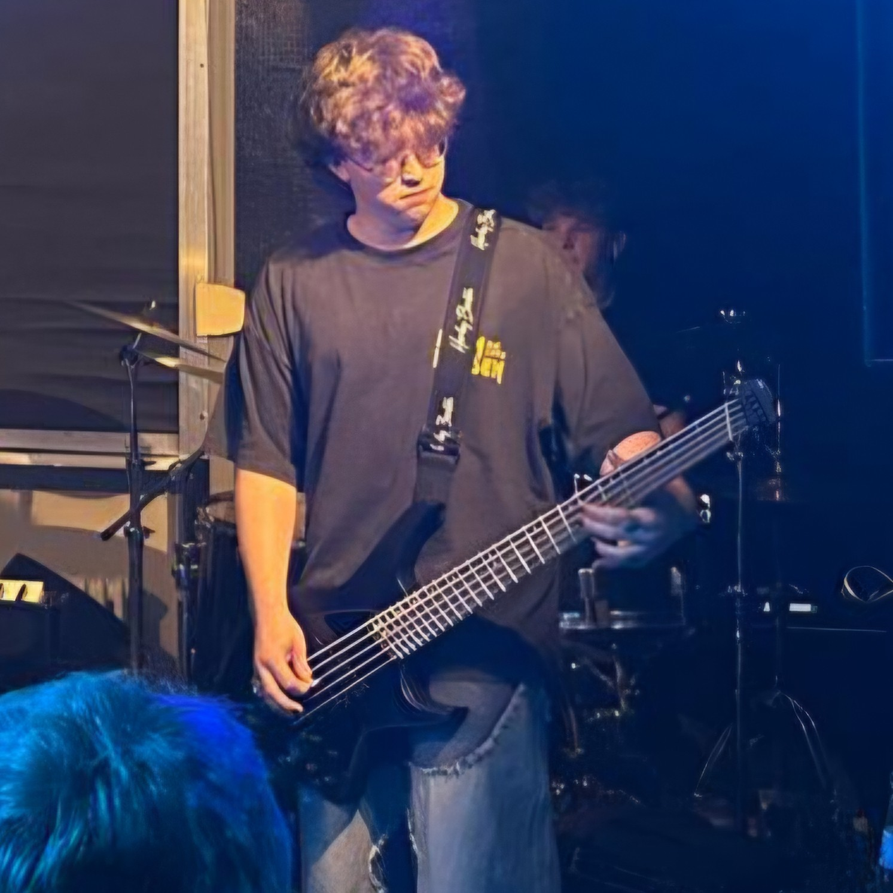
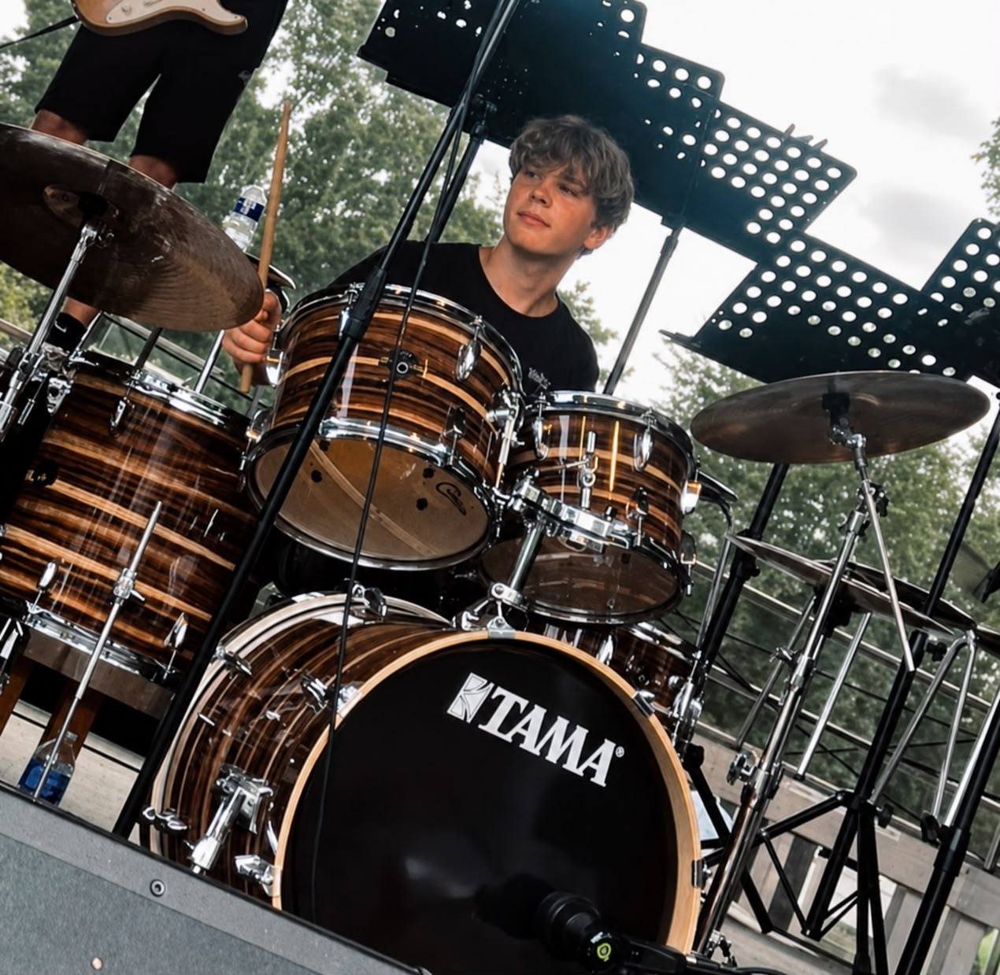

Die Band

Luis Block
Ich bin Luis, 16 Jahre alt und als Lead-Sänger, Frontman und Pianist bei Black Bird dabei. Auf der Bühne spiele ich ein schwarzes E-Piano, das Casio PX-S3100 BK Privia. Zur Musik bin ich gekommen, als ich mit sechs Jahren zum ersten Mal auf dem Klavier meines Opas gespielt habe – seitdem hat sie mich nicht mehr losgelassen. In der Band übernehme ich nicht nur den Gesang und das Piano, sondern repräsentiere uns auch auf der Bühne und halte den Kontakt zum Publikum. Obwohl ich kaum formalen Klavier- oder Gesangsunterricht hatte, lebe ich die Musik voll aus. Wenn ich mal nicht mit der Band probe oder auf der Bühne stehe, bin ich ein großer Eishockey-Fan.

Ben Schroeren
Ich bin Ben, 14 Jahre alt und stehe bei Black Bird als Lead-Gitarrist an der Spitze der Riffs. Mein aktuelles Hauptinstrument ist eine Yamaha Pacifica im auffälligen roten Burst-Look. Als ich nach der Grundschule auf die weiterführende Schule wechselte, wurde ich wie alle Fünftklässler gefragt, ob ich der Bigband beitreten möchte – ungefähr zu dieser Zeit habe ich auch das erste Mal Gitarre gespielt. Damals gab es Black Bird in der heutigen Form noch nicht. Unser Frontman Luis hatte eine Band mit Freunden aus seiner alten Klasse, der ich in der 5. oder 6. Klasse beitrat. Nach einigen Besetzungswechseln hat sich schließlich unsere heutige Konstellation gebildet. Musikalisch bin ich leidenschaftlicher Metal-Hörer und ein riesiger Metallica-Fan.

Aaron Derksen
Ich bin Aaron, 15 Jahre alt und stehe bei Black Bird als Backing-Gitarrist an der Seite der Band. Ich bin im Sommer 2025 dazugekommen, als dringend eine zweite Gitarre beziehungsweise ein Bass gesucht wurde. Bis Niko zu uns gestoßen ist, habe ich den Bass übernommen. Auch wenn ich das Instrument nie formal gelernt hatte, reichte mein Vorwissen von der Gitarre völlig aus, da sich die beiden Instrumente recht ähnlich sind. Gitarre spiele ich seit der 5. Klasse in der Bigband und ab der 7. Klasse auch unabhängig davon. In meiner Freizeit spiele ich gerne Videospiele oder bin beim Fechten anzutreffen.

Niko "V" Neu
Ich bin Niko, 16 Jahre alt und der Bassist von Black Bird, wo ich vor allem meinen Hils HNB5 Black spiele. Als mich die Band aufgenommen hat, hatte ich vor der ersten Probe ehrlich gesagt etwas Bedenken – schließlich war ich gleich zwei Dinge, die man in einer Band eigentlich nicht sein möchte: der Neue und der Bassist. Wobei ich an dieser Stelle kurz formell einhaken muss: Unser Backing-Gitarrist Aaron behauptet ja steif und fest, Bass und Gitarre seien „ziemlich ähnlich“ und man könne das eine einfach so mit dem Vorwissen des anderen spielen. Nun ja... sagen wir es mal so: Jeder, der schon einmal einen Bass in der Hand hatte, weiß, dass das musikalischer Humbug ist. Aber wir verzeihen ihm diesen kleinen Irrtum, er spielt ja schließlich Gitarre.
Musikalisch bin ich jedenfalls schon lange unterwegs. Mit sechs Jahren brachte mich mein Opa zum Mandolinen-Orchester Hüls, wo ich Mandoline lernte und ab zehn Jahren bei den großen Konzerten mitwirkte; heute spiele ich dort aktiv Mandola und Kontrabass. Seit der 5. Klasse spiele ich außerdem Bass in den United Horns und der Jazzband Småland. Mit meinem Einstieg bei Black Bird hat sich mein Traum von einer eigenen Band erfüllt, in der man sich musikalisch völlig frei entfalten kann. Ich höre fast jede Musikrichtung gerne, meine absolute Lieblingsband ist aber Slipknot und ich bin generell ein großer Fan diverser Metal-Genres.

Malou Breitmeyer
Ich bin Malou, 14 Jahre alt und der Schlagzeuger von Black Bird. Ich spiele bereits seit sieben Jahren Schlagzeug. In der 6. Klasse nahm mich unser Gitarrist Ben das erste Mal mit zur Probe, da die Band damals händeringend nach einem Drummer suchte. In den folgenden zwei Jahren kamen und gingen einige Mitglieder, aber Luis, Ben und ich blieben als fester Kern zusammen, haben fleißig geprobt und viel Spaß gehabt. Eine einzelne Lieblingsband habe ich zwar nicht, aber ich höre mich begeistert durch jegliche Arten von Rap und Rock.